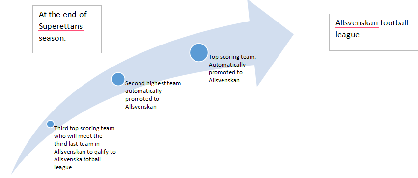

Measuring Joypoints for Superettan Fans!!!
Superettan is the next highest football league in Swedish football. Originally Superettan was called division 2 but in 2000 they decided it was time for a name change. So, division 2 became Superettan. There are 16 that compete playing both home and away games during spring and autumn during the season.
For each game played the teams will be given a score depending on the match results such as win, draw or loss. Once they have played 30 games during a specific period the league season is finished. The most important is that all teams want to be at the first or second place in the league table to be guaranteed a spot in the highest level of football in Sweden namely Allsvenskan. The third highest team hasn’t lost out their opportunity to play in Allsvenskan, but they need to qualify for it. As the two highest scoring teams of Superettan get promoted to Allsvenskan that will also mean that two of the lowest scoring teams will be relegated to Superettan. The third lowest scoring team in Allsvenskan will then meet the third highest scoring team in Superettan where they will play for the final spot in Allsvenskan.  .